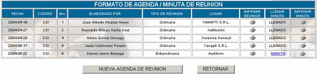
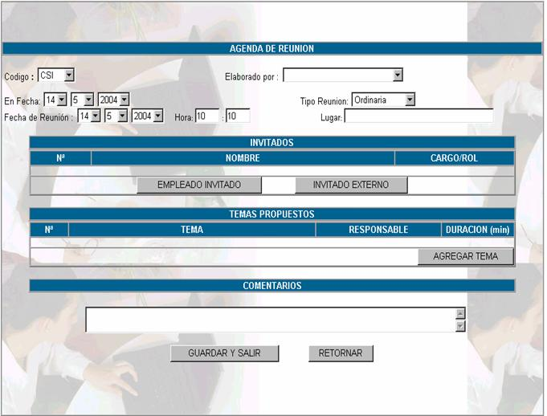
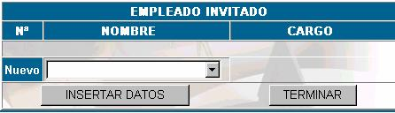
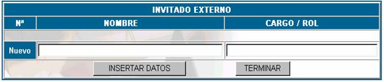
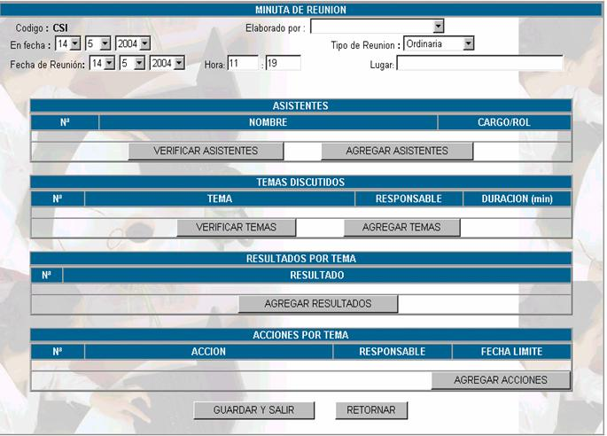
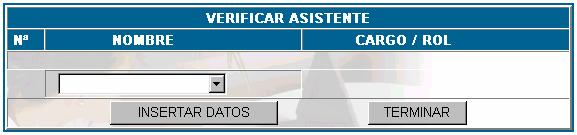
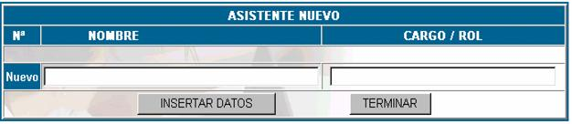
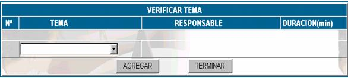
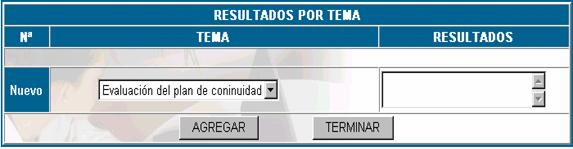
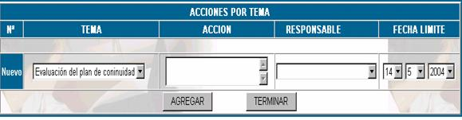

AGENDA
Las reuniones de la comisión de sistemas y
de los subcomités, tanto de adquisiciones, seguridad, continuidad, proyectos,
deberán ser planificadas y documentadas teniendo en cuenta las consideraciones
que se presentan en el manual de procedimientos de dirección y administración
de la tecnología.
Haciendo click en
esta opción se muestra la siguiente pantalla principal.

Fecha; establece la fecha para la cual se realizará la reunión
Codigo;
especifica el código con el cual se registro la reunión
Nro; el
número de reunión.
Elaborado por; especifica el nombre de la persona que organizó la
agenda.
Tipo de reunión; especifica si la reunión es ordinaria, extraordinaria
o de emergencia.
Lugar; especifica el lugar donde se llevará a cabo la reunión.
Nueva agenda de reunión; muestra la siguiente pantalla principal.

Donde:
Código; se
debe especificar si el grupo de reunión será CSI, CCP, CRC u otro tipo de agenda que se pueda registrar.
Elaborado por; se
refiere al nombre de la persona encargada de realizar la agenda de reunión.
En fecha; en
este campo se debe anotar el día en el que se registra la reunión.
Fecha de reunión; se
anota la fecha en la cual se llevará a cabo la reunión, por supuesto esta fecha
no puede ser anterior a la fecha de registro.
Hora; en este campo se debe especificar la hora en la cual
se llevará a cabo la reunión, tenga cuidad de anotar la hora utilizando 0 en
caso de que la hora sea unitaria es decir si la reunión es 8:05 anote 08:05 y
cuando anote horas pm las realice en términos de 24
horas.
Tipo de reunión; en este campo se debe especificar si la reunión es
ordinaria, extraordinaria o de emergencia.
Lugar; en este campo se anota la sucursal y la sala donde
se realizará, si es necesario realice una descripción detallada del lugar donde
se realizará.
Invitados; para realizar una reunión, se requiere de la
presencia de personas del comité y de los subcomités. A estas personas se las
anota como invitados, estas personas pueden ser de la empresa o no, si es que
son de la empresa haga click en el botón EMPLEADO
INVITADO y le aparecerá la siguiente pantalla.

Nombre; en
este campo se debe escoger el nombre del empleado de la empresa que participará
como invitado en la reunión.
Cargo; este campo se llena automáticamente en función del
cargo con el que esté registrado el invitado.
Presione INSERTAR DATOS para
insertar un invitado y TERMINAR, para retornar a la agenda de
reunión.
Si se necesita de la presencia de una
persona ajena a la empresa haga lick en el botón INVITADO
EXTERNO, y aparecerá la siguiente pantalla.

Nombre; coloque
el nombre de la persona a la cual se está invitando y que es ajena a la
empresa.
Cargo Rol;
coloque el cargo que desempeña en la empresa en el cual trabaja.
Presione sobre el botón INSERTAR DATOS
para añadir al invitado a la lista de invitados y TERMINAR
para regresar a la agenda de reunión.
Temas propuestos; se deben establecer los puntos que serán tocados en
la reunión. Estos temas son de interés de todos los miembros que participarán
en la reunión.

Para agregar un nuevo tema de reunión haga click en el botón AGREGAR TEMA y aparecerá la
pantalla siguiente.
Tema; se debe
registrar el nombre del tema el cual se tocará en la reunión.
Responsable; se debe registrar el nombre del proponente del tema,
para efectos de control.
Duración; en
este campo se anota el tiempo estimado que dá el
proponente del tema para terminar la discusión del tema.
Una vez que se hayan registrado los
anteriores campos presione INSERTAR DATOS para insertar el nuevo
tema y TERMINAR para regresar a la Agenda de Reunión.
Comentarios; se anota
los comentarios adicionales que considere el responsable de realizar la agenda
de reunión.
Presione GUARDAR Y SALIR para
que se registren los datos de la reunión.
Imprimir reunión; esta opción permite ver una descripción completa en
un reporte de la agenda de reunión.
Llenar minuta; la minuta se llena después de efectuada la reunión planificada,
para establecer aspectos de control de la reunión y resultados. Haga click en el enlace MINUTA
para comenzar con el registro de la minuta, aparecerá la siguiente pantalla de
llenado de datos:

Donde:
Codigo; se debe especificar
si el grupo de reunión puede ser CSI, CCP, CRC u otro
Elaborado por; se
refiere al nombre de la persona encargada de realizar la minuta de reunión.
En fecha; en este campo se debe anotar el día en el que se
registra la reunión, es diferente del día en el que se lleva a cabo.
Tipo de reunión; en este campo se debe especificar si la reunión es
ordinaria, extraordinaria o de emergencia que se llevó cabo.
Fecha de reunión; se anota la fecha en la cual se llevó a cabo la
reunión, por supuesto esta fecha puede ser anterior a la fecha de registro de
minuta.
Hora; en este campo se debe especificar la hora en la cual
se llevó a cabo la reunión, tenga cuidado de anotar la hora utilizando 0 en
caso de que la hora sea unitaria, es decir, si la reunión es 8:05 anote 08:05 y
cuando anote horas pm las realice en términos de 24
horas.
Lugar; en este campo
se anota la sucursal y la sala donde se realizó la reunión.
Asistentes; en esta parte se anota las personas, tanto invitados
como miembros de la comisión del sistemas o de los subcomites
que asistieron a la reunión, puede ser que los asistentes hayan sido los
registrados en la agenda de reunión, presione el botón VERIFICAR ASISTENTES, para verificar los asistentes de la reunión y
aparecerá la siguiente pantalla.

Nombre; en este campo se debe escoger el nombre del empleado
al cual se le está verificando la asistencia, para realizar la verificación,
solamente se toma en cuenta a los invitados internos y externos.
Cargo; este campo se llena automáticamente en función del
cargo con el que esté el empleado al que se está registrando.
Presione INSERTAR DATOS para
insertar un invitado y TERMINAR, para retornar a la minuta de reunión.
Puede ser que haya asistido a la reunión una
persona no prevista en la lista de invitados, entonces para registrar a esta
persona dentro de la minuta de reunión presione el botón AGREGAR ASISTENTES.

Nombre; coloque
el nombre de la persona que asistió a la reunión pero que no se contempló en la
lista de invitados
Cargo Rol;
coloque el cargo que desempeña dentro de la empresa.
Presione sobre el botón INSERTAR DATOS
para añadir al invitado a la lista de invitados y TERMINAR para
regresar a la minuta de reunión.
Temas discutidos; para
realizar la verificación de los temas propuestos por los miembros de la reunión
presione el botón VERIFICAR TEMAS y aparecerá la pantalla siguiente

Tema; las opciones de selección son aquellas que se
registraron en la agenda de reunión, escoja una de ellas.
Responsable; esta opción no es opcional, debido a que el responsable
en el registro del tema, fue la persona quién propuso el tema de discusión.
Duración; la
duración no puede sobrepasar a la planeada.
Presione AGREGAR para realizar
la verificación de temas y presione TERMINAR para volver a la
minuta de reunión
Puede ser que en la reunión hayan surgido
nuevos temas de discusión para poder agregar estos temas haga click en AGREGAR TEMA y llene los datos
correspondientes al nuevo tema que surgió.
Resultados por tema; cada tema al final de la reunión debe tener un
resultado, entonces para registrar estos, presione en el botón AGREGAR
RESULTADOS , pero recuerde que solo se pueden agregar resultados a los
temas verificados.

Tema;
usted podrá registrar los resultados de los temas verificados, eligiendo el
tema
Resultado;
luego se registra el resultado del tema verificado.
Acciones por tema; las
acciones que se toman analizando los resultados de los temas se registran en
esta parte, para poder llenar las acciones de cada tema haga click en AGREGAR ACCIONES y aparecerá la
pantalla siguiente:

Tema; usted puede elegir entre los temas, de los cuales se
registraron resultados
Acción; en este campo se registra la acción que se tomará
respecto al tema, en función de los resultados.
Responsable; en este campo se establece el nombre del responsable
de la acción que se toma.
Fecha límite; en este campo se establece la fecha límite para
tomar acción.
Imprimir minutas; si usted desea obtener un reporte de la minuta de
reunión correspondiente haga click en el vinculo  .
.